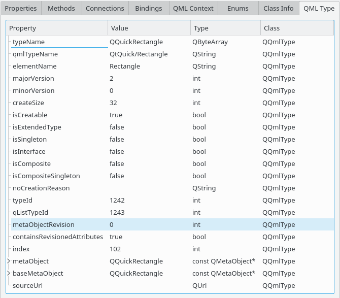

QML Context Scene Graph Material
The QML type view shows additional type information that QQmlEngine holds internally for the type of the currently selected object. This is available both for types defined in C++ and in QML code.
